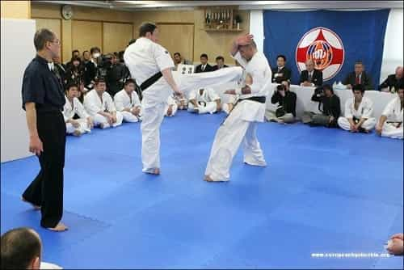
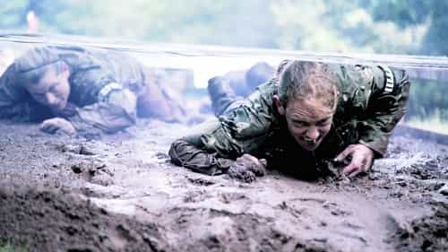
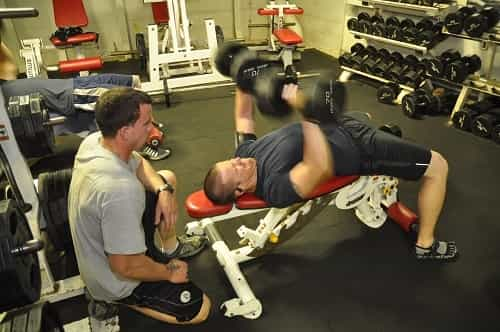
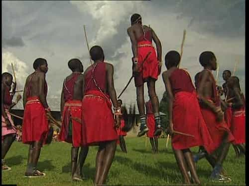

Within the manosphere, one of the best-known problems that confronts young men in the West today is a lack of genuine initiation rituals. In past times in the Western world, young boys underwent various hardships and pains which, once completed, marked their transition from boyhood to manhood. And even today, such initiation rituals still exist in other cultures. But in the West, no such rituals really remain.
At present, there are no established initiation challenges that a Western boy must complete before he is considered a man. After all, is a boy considered a man the first time he has sex? Maybe, but even boys can have sex. So then is it when a boy gets his first job? Or when he first starts to drive? Is it when he finally goes to college? Who knows, which is precisely what the problem is!
Now, while the above options are potential points which could mark a boy’s transition into being a man, all those options are actually quite unsatisfactory. And they are unsatisfactory because they fail to capture the unique essence of manliness: namely, strength, a tough physicality, a biting intellect, self-sufficiency, sacrifice, discipline, and an undying grit which never quits even when your body cannot move another inch.
Consequently, proper initiation rituals, wherever possible, need to emphasize such traits in order to truly mark the transition from boyhood to manhood.
Not the kind of initiation ritual that Western boys need.
At present, there is no way that Western society will reintroduce some type of initiation ritual which all boys can experience. In fact, in our feminized society, there is little doubt that any attempt to reintroduce a formalized initiation ritual exclusively for boys would be met with howls of protest and indignation from feminists and their ilk, but that does not mean that Western men, in small groups, cannot create initiation rituals with their own sons to allow those boys to have a true initiation challenge.
To that end, let me propose five different initiation rites which men could use today to mark the ‘boyhood to manhood’ transition for their sixteen to seventeen-year-old sons or nephews. (And please note that since these challenges are physically demanding, it is strongly suggested that your medical skills are up-to-date before undertaking any of these tests.)

Long before the UFC ever existed, a karate master named Mas Oyama invented Kyokushin karate. He also created what is arguably the most brutal martial arts test known to man: the 100-man kumite. In essence, what this challenge consists of is fighting 100 opponents in a series of two minute rounds without any significant break in-between the rounds. If you get injured, but you can keep going, then you do so. If you are so tired that you cannot raise your arms, too bad. Come hell or high water, the fight continues or you fail the test.
Now, as you can imagine, this is a type of challenge that only a man can complete. Thus, if your teenage boy is into martial arts, and if at least 10 participants are available that can rotate in and out of the fighting, then the 100-man kumite—or a scaled-down version of it—would be a test that would truly show the boy that he is a man. After all, he would be on his own in the ring and would have to use all his strength, will, and wit to survive.
Note as well that the goal of this challenge is not for the boy to really fight the opponents in any significant way; rather, the goal is that the boy faces the challenge and never quits, no matter how tired or in pain he is.
Additionally, realize that, if desired, such a test could be Westernized by changing the fighting to boxing rather than karate. Or, alternatively, this challenge could be completed with rounds of grappling instead of stand-up fighting. Either way though, surviving such a test would show the boy that he is indeed a man.

One of the best ways to test soldiers is with a rucksack march, and some of the most stringent special forces’ testing in the world includes forced marches. Consequently, a 100-km forced march would be another challenge which would truly show a boy that he has transitioned into being a man.
The plan for such a test is simple. The boy—and you, of course—has as long as he needs to complete the march, but he cannot stop to sleep. He must carry all his supplies on him. He can rest at any time, but he cannot quit. That is the test.
Note that, if necessary, this test can be scaled down as well. But anything less than 50-km would be too easy to count as a transition to manhood.

Just as certain special forces use forced marches to test their candidates, others use a challenge called Hell Week to put their candidates to the test. Therefore, you could put your son through a Hell Day as his initiation ritual.
Hell Day would consist of various physical tests and exercises which would not cease for a full 24 hours. Everything from make-shift obstacle courses to 10-kilometer runs could be part of this challenge. So could a thousand burpees or jumping jacks. Either way, plan out everything in advance and then get to it!
Also note that if you are already part of a group of males—such as a sports team or a martial arts club—then you would likely already have the facilities to use as a base camp for this Hell Day. This would also allow you to complete the challenge as a group, which would make it that much more interesting.

If your son is into weight-lifting—as he should be once he hits seventeen or eighteen—then another possible test is to challenge your son to a ‘million-pound lift’. What this means is that you must both move a million-pounds of total weight before the test is done. You and your son enter the weight room, and you don’t leave until a million pounds of iron has been moved by the force of your muscles.
Now such a challenge would take hours to complete and it would involve fatigue the likes of which few men have ever experienced. But what a test it would be! Only a man can endure such a challenge. And that is the point.
Of course, as always, this test could also be modified as necessary for your particular circumstances.
Finally, we must consider initiation rites for boys who, whether due to disability or otherwise, cannot complete physical tests. For such boys, such things as a prolonged fast of a week or more, or a contemplative retreat to a monastery or the mountains could be used to test their willpower and fortitude.
Such boys could also be tested intellectually, perhaps by such a challenge as having them read a series of massive history tombs that are clearly at the level of an adult, or by having them write a thesis-length paper on a subject of their interest.
Either way, the point would be to have them complete an intellectual task that is only expected from a well-seasoned adult. And if they do so without complaint or whining, this would mark their transition into the sphere of men.

In the end, these are just a few of the tests which could be used today to help a teenager know that he has transitioned from being a boy into being a man. But whatever type of test that you choose, the point is to push teenage boys into accomplishing something which only an adult man could do, and which exemplifies the masculine virtues of strength, courage, and will.
Indeed, the goal of any manhood initiation ritual is to push teenagers past their boyhood limits and make them accomplish something which they, as boys, would have never thought possible. But once they realize that it is possible, and once they realize that they, themselves, can endure more pain and suffering then they, as boys, ever thought possible, then they will realize that they have now truly become men.